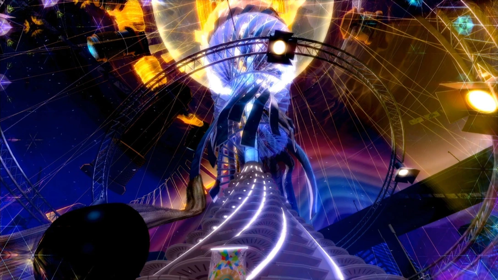

The interior of Cafe Leblanc, owned by Sojiro Sakura
Persona 5 takes place within the Persona universe, revolving around a group of high school students who harness Personas, physical manifestations of their inner psyche. The story begins in April "20XX (2016)" and spans roughly a year. It is set in modern-day Tokyo and features several real-world locations, including Akihabara, Shinjuku, and Shibuya. A major setting throughout the game is Shujin Academy, a high school that the protagonist attends. The second major location is the "Metaverse", a supernatural realm consisting of the physical manifestations of humanity's subconscious desires. In the Metaverse, people with corrupted desires form their own unique "Palace," which is modeled after their distorted perception of a place in the real world, along with a Shadow version of themselves (their true self) possessing a "Treasure" symbolic of their desires. Returning from earlier entries is the Velvet Room, a place that exists for the growth of Persona users and shifts appearance depending on the current guest; in Persona 5, it takes the form of a prison.
Much of the story is told through flashbacks while Sae Niijima interrogates the protagonist. After preventing an assault, he is framed for assaulting the man responsible and put on probation for a year, resulting in expulsion from his school. He is sent to Tokyo to stay with family friend Sojiro Sakura and attend Shujin Academy during his year-long probation. After his arrival, he is drawn into the Velvet Room, where Igor, alongside his assistants, Caroline and Justine, warns him that he must be rehabilitated to avoid future ruin and grants him access to a supernatural mobile app. This leads him into the Metaverse and the Palace of the school's abusive gym teacher and volleyball coach Suguru Kamoshida, along with a fellow student, Ryuji Sakamoto, who had been labeled as a troublemaker due to having been provoked by Kamoshida into assaulting him. After the protagonist and Ryuji are captured by the corrupt manifestation of Kamoshida, also known as his Shadow Self, he awakens to his Persona, Arsène, to save Ryuji from being executed. The two escape to the lower levels of the Palace, where they meet Morgana, a mysterious, small cat-like creature who knows much about the Palaces. Morgana informs the protagonist of the ability to change wicked people's hearts by stealing their "Treasure," the emotional root of their behavior and desires, from the Palaces ruled by their Shadow selves. The protagonist assumes the codename Joker and, together with Morgana, Ryuji, and Ann Takamaki, another fellow student whose friend had been sexually assaulted by the teacher, reforms Kamoshida.
Kamoshida's Palace, the Castle of Lust
Madarame's Palace, the Museum of Vanity
The group forms the Phantom Thieves of Hearts to steal corruption from the hearts of adults to
reform the city, and slowly learns of a broader conspiracy to influence the hearts of Tokyo. They are joined along the way by Yusuke Kitagawa, an art student whom they help to reform his corrupt teacher, Ichiryusai Madarame; Sae's sister Makoto, the president of the school's student council who is assigned to spy on them but joins after being blackmailed by a criminal, Junya Kaneshiro, who they also reform; Sojiro's adopted daughter Futaba Sakura, who became depressed after the conspiracy murdered her mother and blamed her using a forged suicide note; and Haru Okumura, a corporate heiress who rebels against her billionaire father, Kunikazu Okumura, and his attempts to control her life and mistreatment of his employees. Over time, the Phantom Thieves attract the attention of the public and the police, including Sae and celebrity junior detective Goro Akechi.
However, the Phantom Thieves' popularity plummets after a masked assassin frames them for the
death of Haru's father. While pursuing the conspiracy, Akechi joins the group and convinces them to change Sae's heart. After infiltrating Sae's Palace, Joker is captured by the police, and Sae interrogates him despite being removed from the case, at which point the story comes full-circle. Joker convinces Sae of the truth. Akechi is revealed to be the assassin and attempts to kill Joker, but the Phantom Thieves use the Metaverse to fake Joker's death. Aided by Sae and Sojiro, the Phantom Thieves go undercover and learn the conspiracy's leader is politician Masayoshi Shido, who was the one who framed and pressed charges against Joker. He has been using Akechi's Metaverse ability to remove obstacles in his path toward becoming Prime Minister and imposing his reforms on Japan. When the Phantom Thieves infiltrate Shido's Palace, they face Akechi, who reveals himself as Shido's illegitimate son and that his collusion with him was part of a plan to get revenge on Shido for abandoning him and his late mother. Once defeated, Akechi sacrifices himself to protect the Phantom Thieves from a group of enemies (including Shido's cognition of Akechi himself) and allow them to defeat Shido. Despite Shido's arrest and confession, the public's opinion of him remains unchanged, and Shido may be released due to the manipulation of the public by his allies.
Kaneshiro's Palace, the Bank of Gluttony
Futaba's Palace, the Pyramid of Wrath
The Phantom Thieves infiltrate the depths of Mementos, the Palace of everyone's hearts,
to steal the Treasure at its core, believing that changing the general public's hearts will cause
them to realize and accept the truth. Inside, they discover that the public is in chaos and has chosen to give up their autonomy. The Phantom Thieves are ejected from Mementos by the Treasure itself, manifested as the Holy Grail, and vanish after the Metaverse merges with reality. Upon awakening in the Velvet Room, Igor proclaims Joker has failed to prevent the ruin and orders Caroline and Justine to execute him. Thanks to Joker, Caroline and Justine regain their memories and integrate into Lavenza, their proper form. Lavenza reveals that the Igor in the Velvet Room until this point is actually Yaldabaoth, the God of Control, who imprisoned the actual Igor. Yaldabaoth, the Holy Grail made sentient, was created from humanity's wish to give up control and be free from suffering. Through a wager made with Igor over humanity's goals, Yaldabaoth had given Joker and Akechi their abilities to see the influence of their actions on society while steering the wager in his favor.
Yaldabaoth offers Joker to return the world to its previous state at the cost of the world's freedom.
If Joker accepts the offer, an alternate ending happens where the Phantom Thieves return to fame at the cost of humanity's free will. If Joker rejects the offer, he reunites with the rest of the Phantom Thieves in the Velvet Room, and attempt to fight Yaldabaoth again, and as his confidants rally the support of the people, they rebel against Yaldabaoth's control and allow Joker to awaken his ultimate Persona, Satanael, to destroy Yaldabaoth and the Metaverse. After Yaldabaoth's defeat, Joker turns himself in to the police for Shido to be prosecuted. While Joker is incarcerated, the rest of the Phantom Thieves and his confidants help secure evidence of his innocence in the assault charge, leading to his conviction being overturned. By spring, Joker's friends drive him back to his hometown.
Okumura's Palace, the Spaceport of Greed
Sae's Palace, the Casino of Envy
In Persona 5 Royal, two new characters interact with the Phantom Thieves:
Kasumi Yoshizawa, an accomplished gymnast who transferred to Shujin Academy the same time as Joker, and Takuto Maruki, a counsellor hired by the school after Kamoshida is exposed. Kasumi awakens to her Persona after discovering a new Palace in Odaiba with Joker. Maruki, in turn, talks to each of the Phantom Thieves throughout the main story and learns their deepest wishes and regrets via their counselling sessions with him. After defeating Yaldabaoth, a still-living Akechi turns himself over to Sae in Joker's place. At the beginning of the following year, Joker finds reality distorted; Akechi was released without reason, and each Phantom Thief has had their deepest wish granted, including some deceased people being brought back to life. Joker, Akechi, and Kasumi investigate the Palace in Odaiba and learn that its owner is Maruki, who is revealed to be a Persona-user that can alter reality by forcefully changing people's cognitions. After Yaldabaoth's defeat, Maruki took control over Mementos and is determined to create a world where everyone's dreams become reality. Though hesitant at first, Maruki, at the groups insistence reveals that "Kasumi" is actually her twin sister Sumire, who had been unknowingly impersonating her to cope with the former's death due to the influence of Maruki's powers. Maruki gives Joker time to choose whether to accept his idealized reality. Joker reminds the Phantom Thieves and Sumire of the strength and growth they gained from their real lives, and they agree to change Maruki's heart before the altered reality becomes permanent.
Joker later learns from Maruki that Akechi is alive in the altered reality because of Joker's desire to
save him, and that whether Akechi lives depends on Joker accepting Maruki's world. Akechi convinces
Joker to refuse the offer, stating he would rather disappear as himself, than live under Maruki's control. The Phantom Thieves then defeat Maruki the following day, and reality returns to normal. With Akechi gone, Joker finds himself back in prison as he was meant to be before reality was altered, but as with the original game's story, he is cleared and released thanks to his friends and allies. At their final meeting, having reflected on their rejection of Maruki's reality, each member chooses to pursue their own futures, and make their wishes come true under their own power. On the day he is due to return home, Joker escapes tailing government agents with help from both the Phantom Thieves and a reformed Maruki, who is now a taxi driver. At the station, Sumire finds him and bids him farewell. A post-credits scene achieved by reaching Rank 8 of Akechi's Confidant before November 17 shows a person resembling Akechi passing by the window on Joker's train ride home.
Shido's Palace, the Cruiser of Pride
The depths of Mementos, also known as Qliphoth
Similarly to the original game, an alternate ending happens should Joker choose to
accept the idealized reality, instead of resisting and attempting to change Maruki's heart. The ending shows the other Phantom Thieves, including Akechi and Sumire, who is now "Kasumi" permanently, who are seemingly unaware of the true nature of reality, while Joker appears uncomfortable and unsure of his actions.
Maruki's Palace, the Laboratory of Sorrow